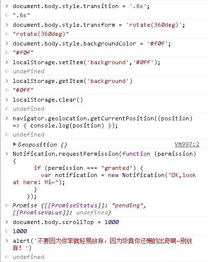
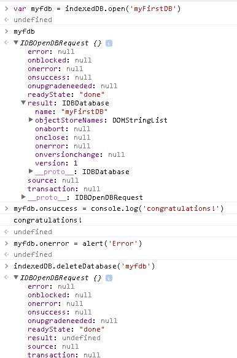
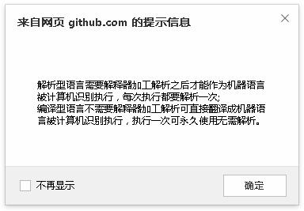
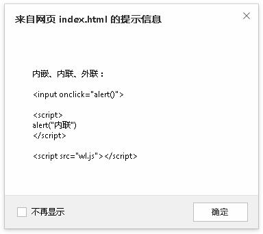
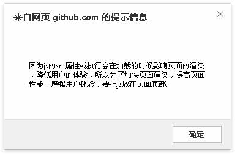
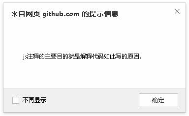
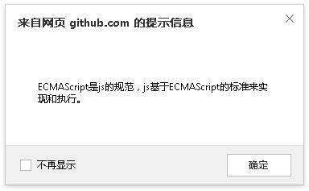

1.入门的同学吧讲义里面的 JS 手敲进去 Google Console 看看实际效果。

2.去找一个讲义没有提及的 API 并尝试使用。

3.解析型语言和编译型语言的主要差别是什么？

4.有哪几种在网页中应用 JS 的方法？

5.为什么推荐把 script 标签都放在页面底部？

6.写注释的主要目的是什么？

7.ECMAScript 是什么？跟 JavaScript 有什么关系？
